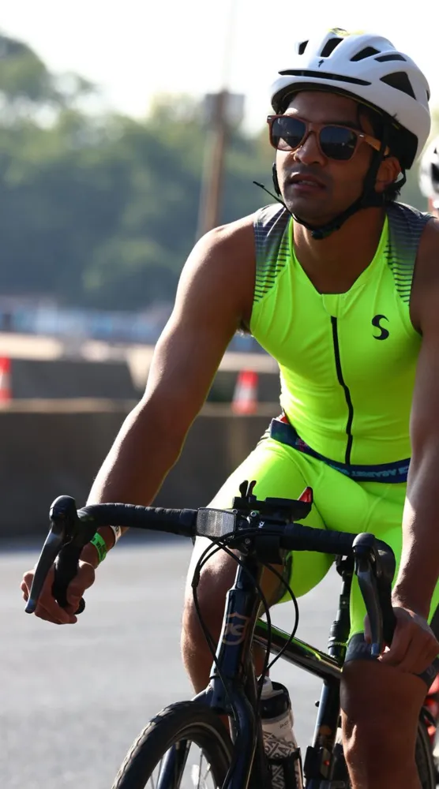

Anup
Patel
I'm a software engineer in Chicago with a focus on backend and infrastructure, and a passion for creating solutions that have a real impact on the people who use them.
Scroll to come back down to Earth
About
I'm an adaptable, well-rounded software engineer. My experience covers backend services and APIs, full-stack web apps, cloud infrastructure, CI/CD and machine learning, and I'm always eager to learn new skills and challenge myself with new projects.
I also love the client side of the job: sitting down with stakeholders, turning their requirements into a plan everyone understands, building it, and sticking around after launch to support and improve it.
Clarity Partners
- Work directly with clients to turn their requirements and user stories into designs, with docs and diagrams that technical and non-technical stakeholders can both follow.
- Design and build solutions end to end, from backend services on Lambda, ECS, DynamoDB and RDS to the Terraform that deploys them.
- Build CI/CD in GitLab and Jenkins, including pipelines that let developers spin up their own test environments.
- Scope AI features with Bedrock, Comprehend and Textract, with cost analyses so clients can decide with real numbers.
- Keep production healthy: monitoring, autoscaling for traffic surges, bot control and automated SSL renewals.
Global Mobility Services
- Built a secure React and JavaScript app that lets clients manage and deploy Terraform to AWS, Azure and GCP from one place.
- Built a Chrome extension that fills out dental insurance claims automatically, with strict handling of sensitive patient data.
- Worked closely with stakeholders to turn business requirements into reliable solutions, then stayed on after launch for support, updates and performance tuning.
- Wrote Python to clean and transform large datasets, and a CloudFormation template that spins up MLflow for ML experiments.
TuSimple
- Built the internal web app the whole company used to track every vehicle's hardware and software and schedule updates for the fleet.
- Led weekly root-cause reviews with the autonomous vehicle help desk, and built them a toolkit of Python and Bash scripts to fix issues faster.
- Worked with QA and test engineers on bug reports, documentation and hotfixes, then rolled out validated Docker images to the fleet with Ansible.
Off the clock
In 2026 I finished my first triathlon: the Olympic distance at SuperTri Chicago, a 1.5 km swim, 40 km bike and 10 km run.
Now I'm training for the Red Hot Moab 50-mile ultramarathon, through the red-rock desert around Moab, Utah.
Besides that, I love to travel, hike, snowboard, spend time with family and friends, and play any sport. I'm a foodie who loves to explore the world, and I believe balance is the key to happiness and success.

Illinois
Data structures, database systems, machine learning, graph theory, linear algebra, numerical analysis, probability and statistics.
Backend
Cloud and infrastructure
Pipelines and testing
Frontend and mobile
Machine learning
Side projects
Trauma support chatbot
A React Native app with a private Gemini-powered chatbot, backed by a Node API and Firebase.
Personal voice generator
Clones a voice with tortoise-tts on Replicate and reads any text back in it.
Stock and crypto signals
A PyTorch CNN that reads price charts for 500 tickers and calls buy or sell.
Ticket finder bot
A Discord bot on an Azure VM that grabs tickets the moment they match.
Landed in Chicago
Whether it's a project, a role or just to say hi, I would love to connect. Thanks for visiting and have a great day!
anup2230@gmail.com